Grading
Receiving Assignments
Students will accept the assignment and clone the repository locally. They will then do work on it, and when they are done they will commit the changes and push the content back up to the repository. In the classroom, you will see this in the Assignment Page. Click on it and you will have a list of students and their status (accepted the assignment, pushed, etc.).
In this example, using the Markdown repository, the student has 3 commits associated with it. Click on these first.
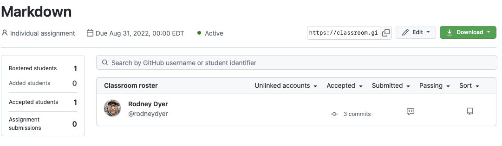
You’ll see that the GitHub-Classroom [bot] did 2 of the commits getting the repository set up for the student but after those, all the remaining commits are from the student.
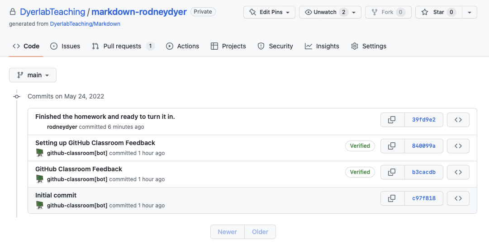
Viewing & Assessment By Diffs
If you click on the student’s commit ID (the 39fd9e2), you’ll see a DIFF of the the changes that the student made (in green on the right pane) relative to the most recent version (on the left in red).
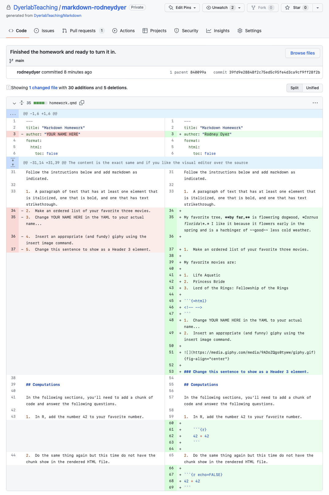
If this is sufficient information for assessment, you can do it by looking here. If you need to do more in-depth work (such as seeing if it renders to HTML and the calculated answers, images, and tables are all correct) then you’ll have to go further.
Let’s go back to the Markdown page listing all the students.
To the right of the 3 commits, is a dialog box that you can use to open communication with the student. At the bottom, you can send a message to the student.
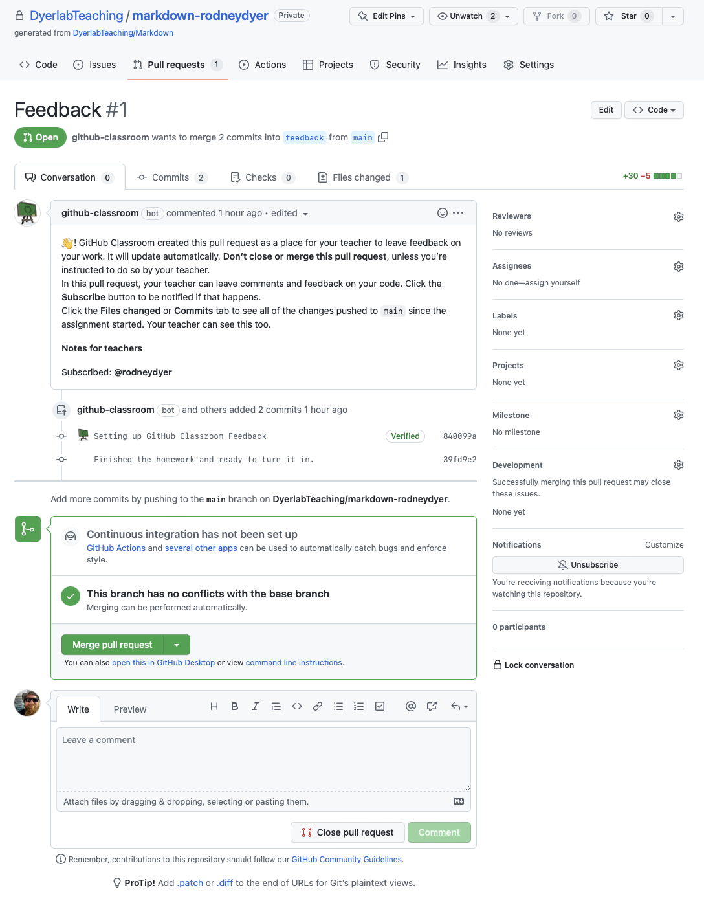
If you want to be cheeky, you can even drag in images and GitHub will integrate them into the feedback.
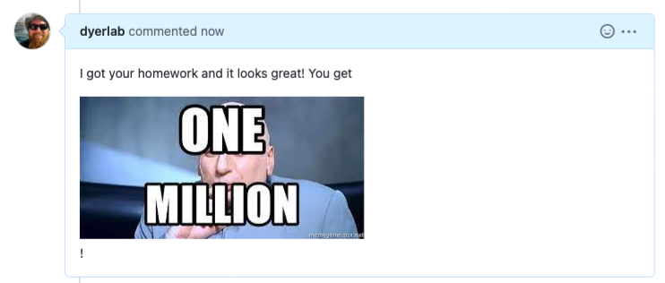
When you send this message, it is displayed in the student’s GitHub Inbox.
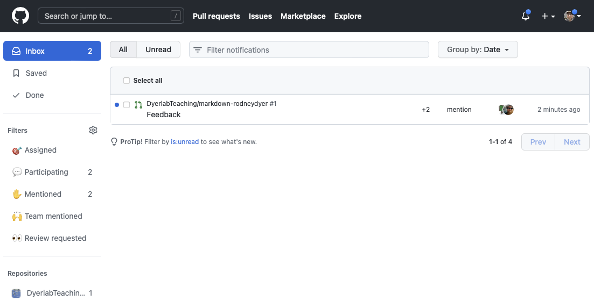
And they can reply as necessary.
Viewing & Assessment By Cloning
If there are more substantiative changes to be made or if the nature of the assignment is sufficiently complex such that simply looking at the markdown is not sufficient for you to determine if they did what was asked you’ll want to clone their repository and build the markdown yourself. Any changes you make to the files (if you commit and push them back) will be visible to the student. So, if you need to help them understand where they didn’t get the right answer or code to work, you can provide it.
To do this, go back to the Assignment page and select “Go to rep”
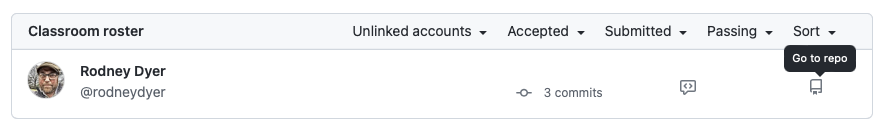
Then you can clone their version to your machine, open it up and make changes. For this example, I’ll correct their obviously incorrect movie rankings...
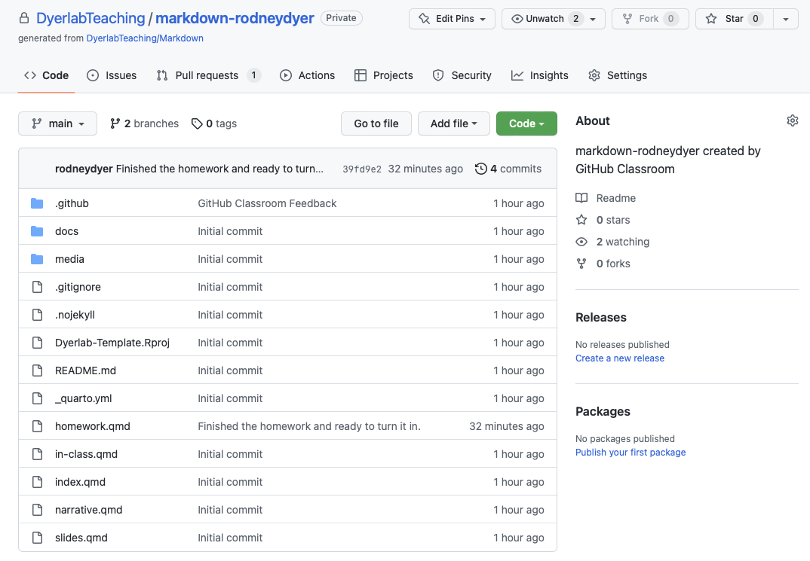
Make the changes to all files and then commit and describe the nature of your changes in the commit message.
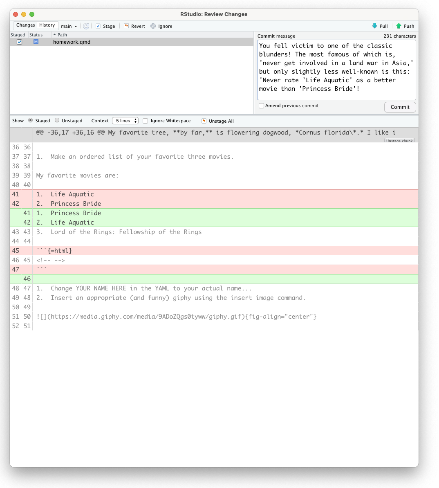
When you push it back up to GitHub, the student will get a new message in their Inbox that shows the changes to their files.
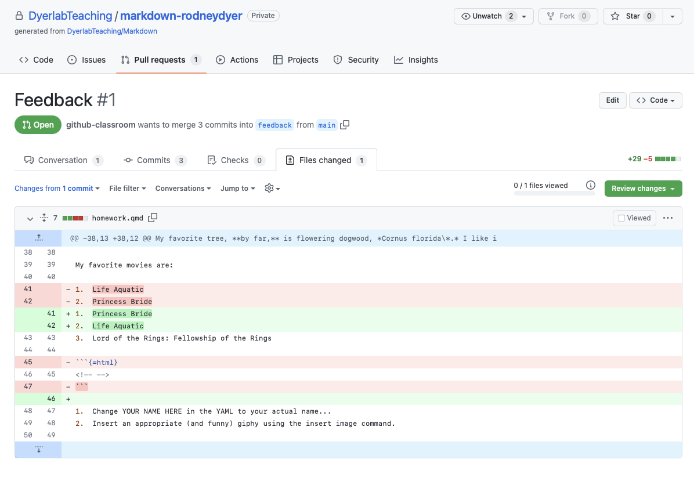
If they go back to RStudio, they will have to Pull these changes down to the local copy (in the Git pane there is a button that says Pull).
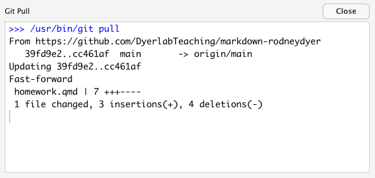
In the same pane, there is also a button labeled “History”
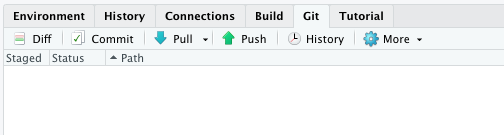
which has the push/pull history in it with all the comments as well. Anyone with an updated pull on the repository will have all these comments.
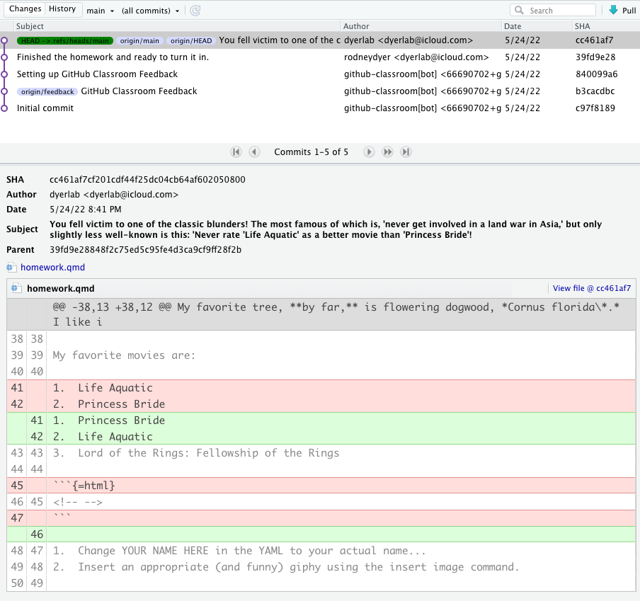
Return to the GitHub Repository.